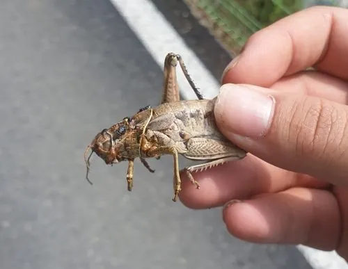

昆虫 · 动物界
笨蝗 Haplotropis brunneriana

体形粗壮、行动迟缓的北方蝗虫，前胸背板高高隆起，翅退化不能飞行，多在干旱荒坡和农田边缘活动，俗称笨蝗。
- 分类
- 门节肢动物门纲昆虫纲目直翅目科癞蝗科属笨蝗属
- 栖息环境
- 干旱草原、荒坡、梯田埂与路旁，多在地面活动和取食
- 地理分布
- 中国华北、西北和东北地区，也见于蒙古和俄罗斯远东
- 保护级别
- IUCN 暂无评估；中国未列入国家重点保护名录
物种志
笨蝗雌虫体长 4–5 cm，雄虫约 3 cm，体色灰褐或黄褐色，体表粗糙并布满颗粒状突起。前胸背板高高隆起呈屋脊状，中央有一条浅色纵纹，两侧有深色斜纹；翅退化得很短，不能飞行，只能依靠粗壮的后足跳跃，行动显得笨拙，因此得名。
它分布在中国华北、西北和东北的干旱草原、荒坡、梯田埂与路旁，取食禾本科、豆科植物的叶片。笨蝗一年发生一代，以卵块在土中越冬，春季孵化，成虫于夏秋出现；雌虫产卵时把腹部插入土中，将卵粒聚成卵块。由于不善飞行，它多在局部地块活动，数量大时会给谷子、玉米等作物带来一定危害，同时也是鸟类、蜥蜴和食虫兽类的食物。目前尚无专门的保护评估，种群数量总体稳定。
形态与习性
- 食性取食禾本科、豆科植物叶片
- 体长雌虫 4–5 cm，雄虫约 3 cm
- 识别前胸背板屋脊状隆起，翅短小不能飞行
- 生活史一年一代，以卵块在土中越冬
- 习性行动迟缓，不善迁移，多在地面跳跃
趣味知识
- 笨蝗的翅退化得只剩小片，完全飞不起来，只能靠腿跳。
- 它前胸背板像屋脊一样高高拱起，是辨认它的关键特征。
- 雌虫产卵时会把腹部钻进土里，把卵粒聚成一块越冬。